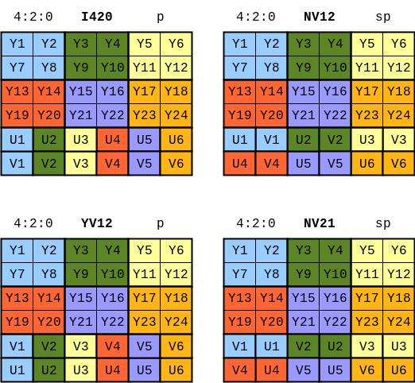
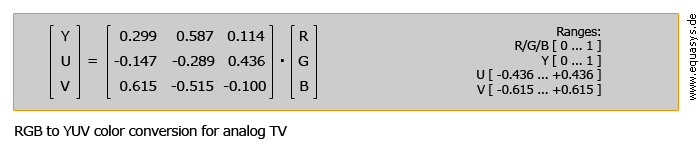
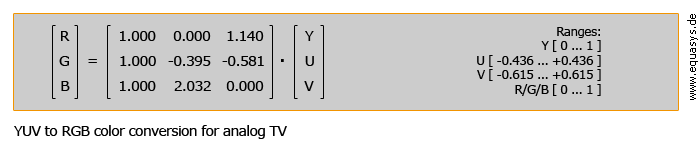
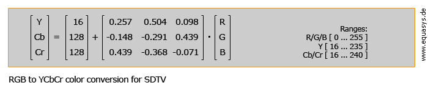
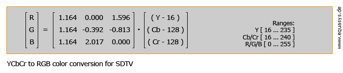
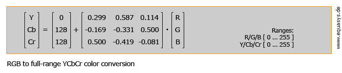
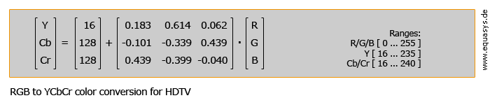

YUV Image format
Posted on Fri 20 August 2021 in Journal
图像格式
最简单的图像格式是 RGB24, 每个像素用24bits 来表示，三原色的每个颜色用 8 bits 来表示，如果还要表示像素的透明度，就再加 8 bits ，即 RGB32 格式
这样一个 RGB24 图片可以用一个三维数组来表示，前两个维度表示图像的空间位置，最后一个维度表示颜色
YUV 则是另一种格式，Y 表示亮度，U 表示色度，V 表示浓度, 按照公式，可以把 RGB 转换成 YUV 格式
YCbCr 其实是 YUV 经过缩放和偏移的翻版。其中 Y 与 YUV 中的 Y 含义一致,Cb,Cr 同样都指色彩，只是在表示方法上不同而已。YCbCr 其中 Y 是指亮度分量，Cb 指蓝色色度分量，而 Cr 指红色色度分量。
YUV 4:4:4
YUV 4:4:4 表示 Y、U、V 三分量采样率相同，即每个像素的三分量信息完整，都是 8bit，每个像素占用 3 个字节。
- 四个像素为： [Y0 U0 V0] [Y1 U1 V1] [Y2 U2 V2] [Y3 U3 V3]
- 采样的码流为： Y0 U0 V0 Y1 U1 V1 Y2 U2 V2 Y3 U3 V3
- 映射出的像素点为：[Y0 U0 V0] [Y1 U1 V1] [Y2 U2 V2] [Y3 U3 V3]
YUV 4:2:2
YUV 4:2:2 表示 UV 分量的采样率是 Y 分量的一半
- 四个像素为： [Y0 U0 V0] [Y1 U1 V1] [Y2 U2 V2] [Y3 U3 V3]
- 采样的码流为： Y0 U0 Y1 V1 Y2 U2 Y3 V3
- 映射出的像素点为：[Y0 U0 V1]、[Y1 U0 V1]、[Y2 U2 V3]、[Y3 U2 V3]
YUV 4:2:0
YUV4:2:0并不是说只有U, V一定为0，而是指U：V互相援引，时见时隐，也就是说对于每一个行，只有一个U或者V分量，如果一行是4:2:0的话，下一行就是4:0:2，再下一行是4:2:0...以此类推。
- 8 个 图像像素为：8 * 3 = 24 个 bytes
[Y0 U0 V0]、[Y1 U1 V1]、 [Y2 U2 V2]、 [Y3 U3 V3]
[Y4 U4 V4]、[Y5 U5 V5]、 [Y6 U6 V6] 、[Y7 U7 V7]
* 采样的码流为：8(Y) + 2(U) + 2(V) = 12 个 bytes， 一下子就压缩了一半
Y0 U0 Y1 Y2 U2 Y3
Y4 V4 Y5 Y6 V6 Y7
* 映射出的像素点为：
[Y0 U0 V4]、[Y1 U0 V4]、[Y2 U2 V6]、[Y3 U2 V6]
[Y4 U0 V4]、[Y5 U0 V4]、[Y6 U2 V6]、[Y7 U2 V6]
即 Y0, Y1, Y4, Y5 共用 U0, V4 而 Y2, Y3, Y6, Y7 共用 U2, V6
YUV 图像的存储格式
YUV 的存储格式有以下三种
- 紧缩格式 Packed (or 交织格式)
- 平面格式 Planar (这种格式的名称常带着字母 "p")
- 半平面格式 Semi-planar (这种格式的名称常带着字母 "sp")
不同的存储格式定义了在内存中的YUV分量的排列顺序
- 紧缩格式（packed）：每个像素点的Y、U、V交替存储，Y1U1V1...YnUnVn。
- 平面格式（planar）：先存储所有像素的Y，再存储所有像素点U或者V，最后存储V或者U。其中U、V分别连续存储：Y1...Yn U1...Un V1...Vn 或者 Y1...Yn V1...Vn U1...Un。
- 半平面格式（semi-planar）：先存储所有像素的Y，再存储所有像素点UV或者VU。其中U、V交替存储：Y1...Yn U1V1...UnVn 或者 Y1...Yn V1U1...VnUn。
从 YUV420P 的名字就可以看出它是 planar 平面格式，根据U和V顺序不同又分为：
- YV12：Y1...Y4n V1...Vn U1...Un (例如：YYYYYYYYVVUU)
- I420： Y1...Y4n U1...Un V1...Vn (例如：YYYYYYYYUUVV)
一般说的 YUV420p就是指 I420
从 YUV420SP 的名字就可以看出它是 Semi-planar 半平面格式
- NV21
- NV12
一般说的 YUV420sp就是指 NV12
引用一张图来表示

图像文件
- BMP：使用 RGB24 或 RGB32, 存储顺序为 BGR 或 BGRA
- JPG: 使用 YUV 并进行 DCT 变换及压缩
格式转换
\(Y = k_rR + k_gG + k_bB\)
\(U = \frac{B - Y}{2(1-k_b)}\)
\(V = \frac{R - Y}{2(1-k_r)}\)
ITU-R 给出的推荐值为
\(k_r=0.299\)
\(k_g=0.587\)
\(k_b=0.114\)
- RGB to YUV
\(\left [
模拟电视
传统上说的 YUV 是用于模拟电视的色彩表示，它与 RGB 之间的转换公式如下


标清视频
对于数字视频，使用颜色格式 YCbCr。 对于标清电视应用 (SDTV)，以下等式描述了从 RGB 到 YCbCr 的颜色转换（根据 ITU-R BT.601）：


对于使用 RGB 和 YCbCr 颜色格式的基于计算机的应用程序，色度和亮度值的可能范围保留了一些上下的余量空间，这是为避免过冲提供一些空间所必需的。
如果要使用 8 位的完整可能范围，则不提供足部空间或动态余量。 通常，这种全范围颜色格式用于 JPEG 图像。
RGB 颜色到全范围 YCbCr 颜色的转换由以下等式描述：


高清视频
对于高清电视应用 (HDTV)，转换因子以有所不同：

代码示例
void rgb2yuv(double& Y, double& U, double& V, const double R, const double G, const double B)
{
Y = 0.257 * R + 0.504 * G + 0.098 * B + 16;
U = -0.148 * R - 0.291 * G + 0.439 * B + 128;
V = 0.439 * R - 0.368 * G - 0.071 * B + 128;
}
void yuv2rgb(double& R, double& G, double& B, double Y, double U, double V)
{
Y -= 16;
U -= 128;
V -= 128;
R = 1.164 * Y + 1.596 * V;
G = 1.164 * Y - 0.392 * U - 0.813 * V;
B = 1.164 * Y + 2.017 * U;
}
在工程上，为提高性能，可以先用整数计算，再右移8位
void rgb2yuv(double& Y, double& U, double& V, const double R, const double G, const double B)
{
Y = ((66 * R + 129 * G + 25 * B) >> 8) + 16;
U = ((-38 * R + -74 * G + 112 * B) >> 8) + 128;
V = ((112 * R + -94 * G + -18 * B) >> 8) + 128;
}